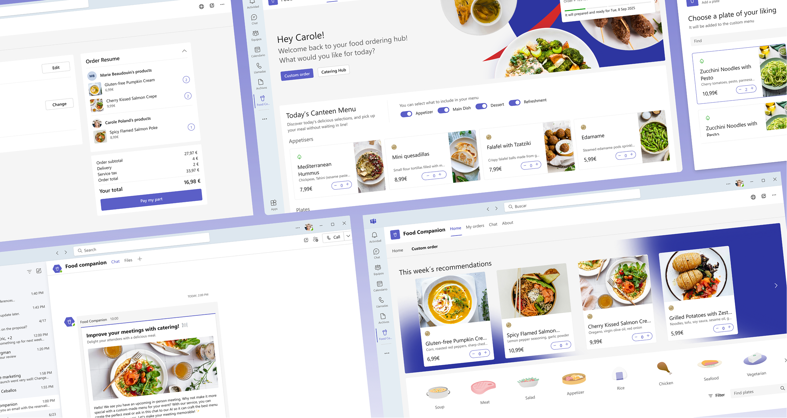
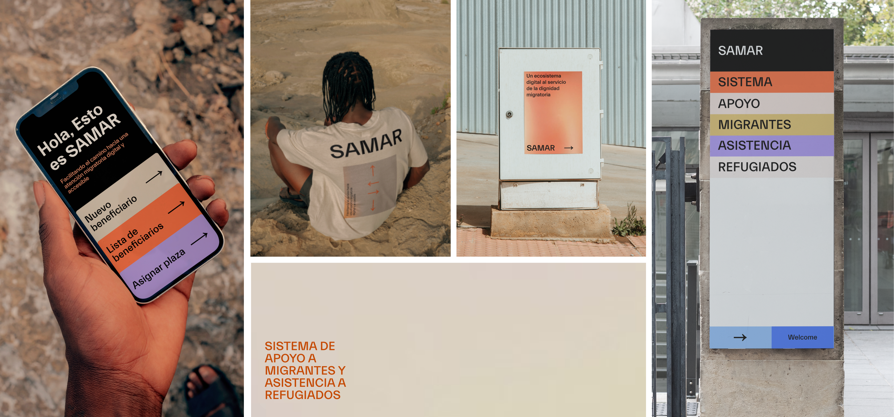
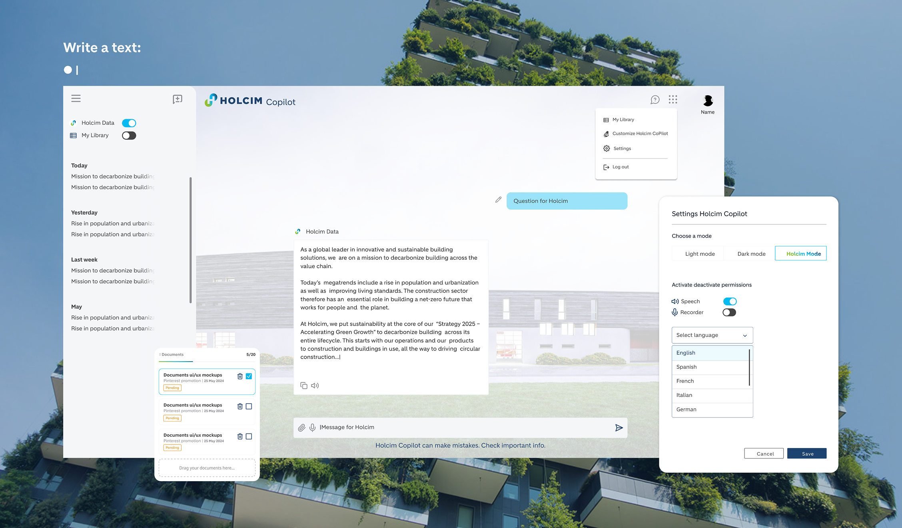

Diferentes proyectos
- UI Design
- UX Design
- Component Design
- Branding
A selection of visual proposals and design projects developed for different clients and sectors.

Projects developed for different clients, from interface proposals to component systems and branding. Each project with its own challenges and context.

Each proposal starts from an analysis of the client's context and a visual exploration that seeks coherence, functionality and personality.
